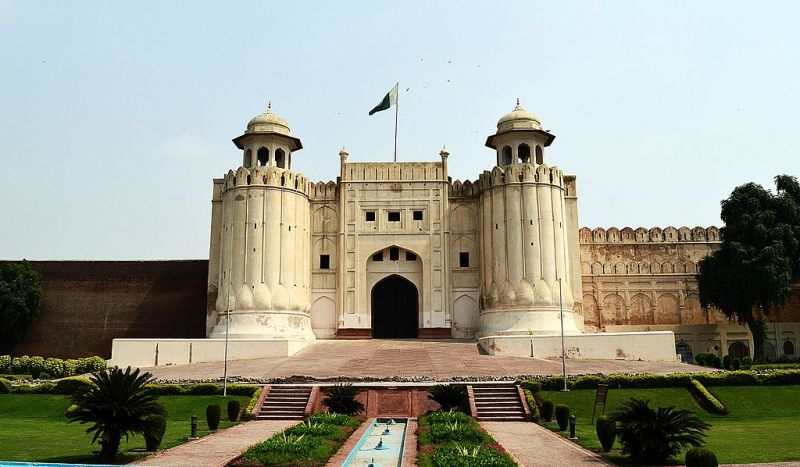

Lahore
About Lahore
Lahore, often referred to as the "Heart of Pakistan," is a city steeped in rich history and vibrant culture. Situated in the Punjab region of Pakistan, Lahore has been a significant center of trade, art, and learning for centuries. One of its most iconic landmarks is the Badshahi Mosque, a stunning architectural marvel built during the Mughal era, showcasing intricate design and grandeur that continues to awe visitors. Lahore Fort, another UNESCO World Heritage Site, stands as a testament to the city's historical significance, with its magnificent Mughal architecture and beautiful gardens.

Beyond its historical treasures, Lahore is known for its lively atmosphere and warm hospitality. The city is renowned for its delicious culinary scene, featuring mouthwatering dishes like biryani, nihari, and the world-famous Lahori seekh kebabs. The bustling streets of Lahore are adorned with colorful bazaars, such as Anarkali and Liberty Market, where visitors can shop for traditional crafts, textiles, and souvenirs. Lahore's cultural festivals, including the vibrant Basant kite festival and the melodious All Pakistan Music Conference, further highlight the city's love for art and celebration. Lahore's unique blend of history, culture, and gastronomy makes it a captivating destination that truly encapsulates the spirit of Pakistan.
